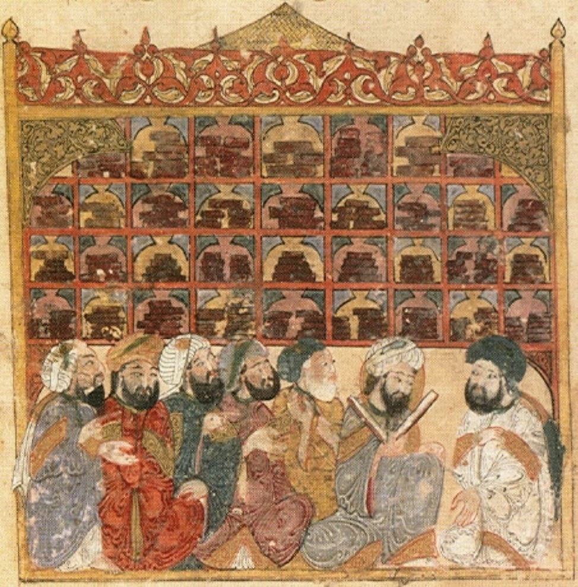
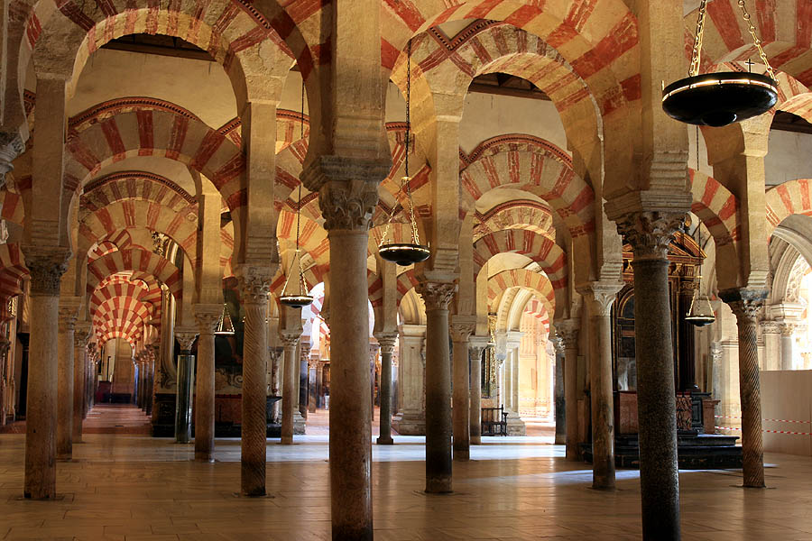
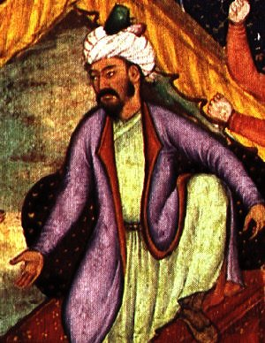

1. Το Χαλιφάτο των Αββασιδών: Η Βαγδάτη ως Μητρόπολη του Κόσμου
Το 750 μ.Χ., μια σαρωτική εξέγερση με επίκεντρο το Χορασάν και μαύρες σημαίες υπό τον Αμπού Μούσλιμ ανέτρεψε τη δυναστεία των Ομεϋαδών της Δαμασκού. Στην εξουσία ανήλθε η δυναστεία των Αββασιδών (750–1258 μ.Χ.), απογόνων του Αλ-Αμπάς, θείου του Προφήτη Μωάμεθ.
Η γεωπολιτική αυτή μετατόπιση άλλαξε ριζικά τη φυσιογνωμία του ισλαμικού κόσμου:
- Το κέντρο βάρους μεταφέρθηκε από τη μεσογειακή, ελληνορωμαϊκή Συρία στην καρδιά της αρχαίας Μεσοποταμίας, υιοθετώντας την πλούσια περσική διοικητική και αυλική παράδοση.
- Το 762 μ.Χ., ο δεύτερος Αββασίδης Χαλίφης Αλ-Μανσούρ ίδρυσε τη νέα πρωτεύουσα: τη Βαγδάτη (Madinat as-Salam = «Πόλη της Ειρήνης»). Δεν ακολούθησαν το κλασικό ιπποδάμειο σύστημα, αλλά σχεδίασαν μια απόλυτα κυκλική πόλη με ομόκεντρα τείχη, στο κέντρο της οποίας δέσποζε το μεγάλο τζαμί και το παλάτι. Καθώς οι ομόκεντροι κύκλοι δεν εφάπτονταν πλήρως μεταξύ τους, στα διάκενα δημιουργήθηκαν ολάνθιστοι κήποι και περιβόλια, ποτιζόμενα αδιάκοπα από τα νερά του ποταμού Τίγρη! Η Βαγδάτη εξελίχθηκε στην πολυπληθέστερη μητρόπολη του κόσμου, ξεπερνώντας το ένα εκατομμύριο κατοίκους.
Όπως παρατηρεί η Μαρία Ευθυμίου, αν κάποιος έπαιρνε μια «μηχανή του χρόνου» πίσω στο 814 μ.Χ., την ώρα που η πρωτεύουσα του Καρλομάγνου στο Άαχεν ήταν ένας ταπεινός οικισμός μόλις 2.500 κατοίκων, οι μόνες μεγαλουπόλεις στη Γη που θα του έκοβαν την ανάσα ήταν η κινεζική Τσανγκάν των δύο εκατομμυρίων, η Κωνσταντινούπολη των 400.000, και οι αραβικές μητροπόλεις: η Βαγδάτη και η Κόρδοβα.
Υγιεινή, Νοσοκομεία, Ιμαρέτ & η Σούπα του Πατσά:
Οι αραβικές πόλεις διέθεταν εξελιγμένο αποχετευτικό σύστημα, δημόσια λουτρά (χαμάμ), νυχτερινό φωτισμό με λάμπες λαδιού, περιφρουρούμενες κλειστές αγορές πολυτελείας (Μπεζεστένια με 24ωρη φύλαξη που λειτουργούσαν και ως θυρίδες ασφαλείας για τιμαλφή), καραβάν-σεράι και νοσοκομεία (Bimaristan).
Στη Βαγδάτη και το Κάιρο, τα νοσοκομεία είχαν ξεχωριστές πτέρυγες ανά ασθένεια, αυστηρή καραντίνα για λοιμώδη νοσήματα, εσωτερικές αυλές με γάργαρα συντριβάνια (καθώς πίστευαν ότι το κελάρυσμα του νερού κατευνάζει την ψυχή) και οργανοπαίκτες που έπαιζαν γαλήνιες μελωδίες για την ανάρρωση των ασθενών!
Παράλληλα, άνθιζε ο συμπονετικός θεσμός των Ιμαρέτ (Imarets) — δημόσια συσσίτια και καταφύγια ανοιχτά σε κάθε άνθρωπο, πλούσιο ή πάμπτωχο, μουσουλμάνο, χριστιανό ή εβραίο. Όπως σχολιάζει χαριτωμένα η Μαρία Ευθυμίου:
«Στα σφαγεία κάθε πόλης, τα κεφαλάκια, τα ποδαράκια και οι κοιλιές των ζώων δεν πουλιούνταν στα κρεοπωλεία. Ο νόμος απαιτούσε να δίνονται υποχρεωτικά στα ιμαρέτ! Εκεί οι μάγειρες τα έπλεναν σχολαστικά, τα έβαζαν σε τεράστια καζάνια, έριχναν κριθαράκι και ρύζι και έβραζαν με τις ώρες μια πλούσια, ζελατινώδη σούπα: τον κλασικό πατσά! Έτσι τρεφόταν καθημερινά ο φτωχός λαός — γι' αυτό και μέχρι σήμερα υπάρχουν άνθρωποι που αν δεν πιουν πατσά το πρωί, δεν μπορούν να ξεκινήσουν τη μέρα τους!».
Η Μάχη του Ταλάς (751 μ.Χ.) & η Επανάσταση του Χαρτιού:
Τον Ιούλιο του 751 μ.Χ., στις όχθες του ποταμού Ταλάς (στα σύνορα του σημερινού Καζακστάν και Κιργιστάν), οι αραβικές δυνάμεις των Αββασιδών συγκρούστηκαν με τον αυτοκρατορικό στρατό της κινεζικής δυναστείας των Τανγκ. Η αραβική νίκη είχε μια κοσμοϊστορική συνέπεια που άλλαξε τον ρου της διανόησης: ανάμεσα στους Κινέζους αιχμαλώτους βρίσκονταν τεχνίτες που κατείχαν το επτασφράγιστο μυστικό της κατασκευής χαρτιού!
Οι Άραβες μετέφεραν την τεχνογνωσία αρχικά στη Σαμαρκάνδη και κατόπιν στη Βαγδάτη:
- Από το Δέρμα στο Φθηνό Χαρτί: Στη μεσαιωνική Ευρώπη, τα βιβλία γράφονταν σε περγαμηνή (επεξεργασμένο δέρμα ζώου). Για να παραχθεί ένα και μόνο αντίτυπο της Βίβλου ή ενός φιλοσοφικού έργου, απαιτούνταν η σφαγή ενός ολόκληρου κοπαδιού 200–300 προβάτων ή μόσχων! Το κόστος ήταν απαγορευτικό, γι' αυτό και τα μοναστηριακά βιβλία ήταν ελάχιστα και δεμένα με αλυσίδες στα αναλόγια.
- Η Έκρηξη των Βιβλιοθηκών: Οι Άραβες τελειοποίησαν την παραγωγή χαρτιού από κουρέλια λιναριού και βαμβάκι. Το χαρτί ήταν ελαφρύ, φθηνό, απορροφητικό και ανθεκτικό. Μέσα σε λίγες δεκαετίες, η Βαγδάτη διέθετε πάνω από 100 βιβλιοπωλεία και εργαστήρια αντιγραφέων στην περίφημη αγορά Suq al-Warraqin, ενώ ιδιώτες λόγιοι κατείχαν προσωπικές βιβλιοθήκες χιλιάδων τόμων!
2. Ο «Οίκος της Σοφίας» (Bayt al-Hikma) & το Κίνημα των Μεταφράσεων
Στη Βαγδάτη, ο Χαλίφης Αλ-Μαμούν ίδρυσε την περίφημη ακαδημία, παρατηρητήριο και βιβλιοθήκη Bayt al-Hikma (Οίκος της Σοφίας). Σύμφωνα με την αραβική παράδοση, ο Αριστοτέλης εμφανίστηκε στον Αλ-Μαμούν σε όνειρο, διαβεβαιώνοντάς τον ότι η ορθολογική σκέψη και η θρησκευτική πίστη βρίσκονται σε απόλυτη αρμονία!
Επί δύο αιώνες, λόγιοι κάθε εθνικότητας και δόγματος (μουσουλμάνοι, Νεστοριανοί χριστιανοί, Ιουδαίοι, Ζωροάστρες) συνεργάστηκαν αρμονικά στο μεγαλύτερο μεταφραστικό εγχείρημα της ανθρώπινης ιστορίας:
- Ο Χουναΐν ιμπν Ισχάκ (Hunayn ibn Ishaq / Johannitius): Χριστιανός Άραβας λόγιος, επικεφαλής του Οίκου της Σοφίας. Ο Χαλίφης τον αντάμειβε πληρώνοντάς τον σε καθαρό χρυσάφι ίσο με το βάρος κάθε αρχαίου χειρογράφου που μετέφραζε στα αραβικά! Ο Χουναΐν εφάρμοσε υποδειγματική επιστημονική κριτική κειμένου, συγκρίνοντας πολλαπλά ελληνικά χειρόγραφα για να αποκαταστήσει τα πρωτότυπα.
Η Τετραπλή Αλυσίδα των Μεταφράσεων: Πώς Σώθηκε η Αρχαία Σοφία
Η πορεία της αρχαίας ελληνικής σκέψης προς τη νεότερη Ευρώπη ακολούθησε μια συναρπαστική σκυταλοδρομία τεσσάρων σταδίων:
- Ελληνικό Πρωτότυπο: Συγγράμματα των Αριστοτέλη, Πλάτωνα, Ευκλείδη, Γαληνού, Ιπποκράτη, Πτολεμαίου σε πόλεις όπως η Αλεξάνδρεια, η Αντιόχεια και η Κωνσταντινούπολη.
- Συριακή Μετάφραση: Χριστιανοί λόγιοι της Ανατολής (Νεστοριανοί και Μονοφυσίτες) μετέφρασαν τα κείμενα στη συριακή γλώσσα στις σχολές της Εδέσσης και της Νισίβιδος.
- Αραβική Μετάφραση & Σχολιασμός: Στον Οίκο της Σοφίας στη Βαγδάτη και κατόπιν στην Κόρδοβα, τα κείμενα μεταφράστηκαν στα αραβικά, διορθώθηκαν με πειράματα και εμπλουτίστηκαν με κολοσσιαία σχόλια από τον Αβικέννα και τον Αβερρόη.
- Λατινική Μετάφραση: Τον 12ο αιώνα, στη φημισμένη Σχολή Μεταφραστών του Τολέδο στην Ισπανία (υπό τον Αρχιεπίσκοπο Ραϋμόνδο και τον Γεράρδο της Κρεμόνας), χριστιανοί και Εβραίοι λόγιοι μετέφρασαν τα αραβικά κείμενα στα λατινικά, τροφοδοτώντας τα πρώτα ευρωπαϊκά πανεπιστήμια (Παρίσι, Οξφόρδη, Μπολόνια) και γεννώντας τον Σχολαστικισμό του Θωμά Ακινάτη!

3. Οι Γίγαντες της Επιστήμης και της Σκέψης
Οι Άραβες και Πέρσες διανοητές δεν υπήρξαν απλοί θεματοφύλακες, αλλά ρηξικέλευθοι ερευνητές:
Μαθηματικά & Αστρονομία:
- Αλ-Χουαρίζμι (Al-Khwarizmi, περ. 780–850): Πατέρας της Άλγεβρας (από το έργο του Al-Kitab al-mukhtasar fi hisab al-jabr wal-muqabala). Από το όνομά του γεννήθηκε ο όρος αλγόριθμος. Εισήγαγε τα ινδικά ψηφία (1, 2, 3...) και το μηδέν (sifr = κενό, απ' όπου προέρχεται το λατινικό zephirum, το γαλλικό chiffre και το αγγλικό zero / cipher).
- Αλ-Μπιρουνί (Al-Biruni, 973–1048): Ιδιοφυής πολυμαθής. Υπολόγισε την ακτίνα της Γης από έναν λόφο στην Παντζάμπ χρησιμοποιώντας αστρολάβο και τριγωνομετρία, βρίσκοντας 6.335,7 χλμ. (απόκλιση μόλις 0,6% από τη σημερινή μέτρηση των 6.371 χλμ.!).
Ιατρική & Οπτική:
- Ιμπν Σίνα / Αβικέννας (Ibn Sina, 980–1037): Συγγραφέας του κολοσσιαίου Κανόνα της Ιατρικής (Al-Qanun fi al-Tibb), ο οποίος παρέμεινε το κυρίαρχο πανεπιστημιακό εγχειρίδιο στην Ευρώπη μέχρι τα τέλη του 17ου αιώνα. Πρωτοπόρησε στη διάγνωση παθήσεων, στην ψυχοσωματική ιατρική και στην έννοια της καραντίνας για τη μετάδοση λοιμωδών νοσημάτων.
- Αλ-Ραζί / Ραζής (Al-Razi, 865–925): Διευθυντής του μεγάλου νοσοκομείου της Βαγδάτης. Διαχώρισε για πρώτη φορά κλινικά την ευλογιά από την ιλαρά και απέρριψε την αλχημεία υπέρ της πειραματικής χημείας.
- Ιμπν αλ-Χαϊθάμ / Αλχαζέν (Alhazen, 965–1040): Πατέρας της σύγχρονης Οπτικής. Με το έργο του Kitab al-Manazir, κατέρριψε την αρχαία θεωρία του Πτολεμαίου και απέδειξε μέσω πειραμάτων με σκοτεινό θάλαμο (camera obscura) ότι το φως εισέρχεται στο μάτι από τα αντικείμενα και όχι το αντίστροφο.
- Η Χειρουργική των Ματιών & το Μουσείο Μπενάκη: Οι Άραβες γιατροί προχωρούσαν σε πρωτοποριακές επεμβάσεις μέσα στο ανθρώπινο σώμα και στο μάτι (αφαίρεση καταρράκτη με κοίλη μεταλλική βελόνα αναρρόφησης). Όπως προτρέπει η Μαρία Ευθυμίου: «Κάντε ένα δώρο στον εαυτό σας και πηγαίνετε στο Μουσείο Μπενάκη Ισλαμικής Τέχνης στην Αθήνα, στο Θησείο! Ο Αντώνης Μπενάκης —ο "Τρελαντώνης" της Πηνελόπης Δέλτα— συγκέντρωσε στην Αίγυπτο 10.000 έργα, δημιουργώντας την τρίτη σπουδαιότερη συλλογή ισλαμικής τέχνης στον κόσμο. Εκεί θα δείτε μια προθήκη με αραβικά χειρουργικά εργαλεία του 9ου και 10ου αιώνα, καθώς και αντικείμενα μεταλλοτεχνίας τόσο λεπτεπίλεπτα που μέχρι σήμερα απορούμε πώς κατόρθωσαν να τα φιλοτεχνήσουν συνδυάζοντας μέταλλα με διαφορετικά σημεία τήξης!».
- Το Ψυχολογικό Ανακλαστικό απέναντι στη Δύση: Η καθηγήτρια παραλληλίζει τη σύγχρονη αραβική πικρία με τη νεοελληνική νοοτροπία: «Όπως εμείς λέμε στους Ευρωπαίους "όταν εμείς χτίζαμε Παρθενώνες, εσείς τρώγατε βελανίδια στα δάση", έτσι ακριβώς νιώθει και ο Άραβας! Σου λέει: "Όταν εσείς στην Ευρώπη του Μεσαίωνα ζούσατε στο απόλυτο σκοτάδι, εμείς στη Βαγδάτη και την Κόρδοβα χειρουργούσαμε μάτια, λύναμε δευτεροβάθμιες εξισώσεις, είχαμε 70 δημόσιες βιβλιοθήκες και νοσοκομεία με μουσικοθεραπεία!"».
Φιλοσοφία & Λογική:
- Ιμπν Ρουσντ / Αβερρόης (Ibn Rushd, 1126–1198): Ο μέγιστος σχολιαστής του Αριστοτέλη στην Κόρδοβα. Υπερασπίστηκε με πάθος την αυτονομία της λογικής απέναντι στον θρησκευτικό συντηρητισμό του Αλ-Γκαζαλί (συγγράφοντας το «Ανασκευή της Ανασκευής» / Tahafut al-Tahafut), ασκώντας καταλυτική επίδραση στη δυτική σχολαστική σκέψη.
4. Η Αλ-Ανταλούς: Το Θαύμα της Κόρδοβας
Στη δυτική εσχατιά της Ευρώπης, ο μοναδικός πρίγκιπας των Ομεϋαδών που γλίτωσε από τη σφαγή των Αββασιδών, ο Αμπντ αλ-Ραχμάν Α΄, διέσχισε κολυμπώντας τον Ευφράτη, περιπλανήθηκε στη Βόρεια Αφρική και έφτασε στην Ιβηρική Χερσόνησο το 756 μ.Χ., ιδρύοντας το ανεξάρτητο Εμιράτο (και μετέπειτα Χαλιφάτο) της Κόρδοβας.
Η μουσουλμανική Ισπανία, γνωστή ως Αλ-Ανταλούς (Al-Andalus), αποτέλεσε τον πιο προηγμένο πολιτισμό της μεσαιωνικής Ευρώπης:
- Η Κόρδοβα του 10ου αιώνα: Αριθμούσε σχεδόν μισό εκατομμύριο κατοίκους, όταν το Παρίσι και το Λονδίνο ήταν λασπώδεις οικισμοί μερικών χιλιάδων ανθρώπων. Διέθετε πλακόστρωτους δρόμους με νυχτερινό φωτισμό λαμπτήρων λαδιού, 300 δημόσια και ιδιωτικά χαμάμ, αποχετευτικό δίκτυο και 70 δημόσιες βιβλιοθήκες, με τη βασιλική βιβλιοθήκη να περιλαμβάνει 500.000 τόμους — όσα βιβλία διέθετε ολόκληρη η υπόλοιπη Ευρώπη μαζί!
- Convivencia (Η Συνύπαρξη): Μουσουλμάνοι, Χριστιανοί (Μοζάραβες) και Σεφαραδίτες Εβραίοι συνεργάστηκαν αρμονικά. Στην αυλή της Κόρδοβας αναδείχθηκε ο μέγιστος εβραίος φιλόσοφος του Μεσαίωνα, ο Μωυσής Μαϊμονίδης (Maimonides, 1138–1204), συγγραφέας του Οδηγού των Απορούντων.
- Το Μεγάλο Τέμενος της Κόρδοβας (Mezquita): Με το αξεπέραστο «δάσος» των 856 ριγωτών κιόνων από μάρμαρο, γρανίτη και ίασπι και τις δίτονες πεταλοειδείς αψίδες, αποτελεί ένα από τα κορυφαία αρχιτεκτονικά θαύματα της ανθρωπότητας.

5. Το Ισλάμ στην Ινδία: Από τον Μαχμούντ του Γκάζνι στον Μπαμπούρ
Ενώ στη Δύση το Ισλάμ έφτανε στον Ατλαντικό, στην Ανατολή εξαπλωνόταν στην ινδική υποήπειρο:
Η Γεωγραφική Ιδιοτυπία της Ινδίας & ο Γάγγης:
Η ινδική υποήπειρος απομονώνεται από την υπόλοιπη Ασία από το γιγάντιο στεφάνι των Ιμαλαΐων. Αυτό της χαρίζει μοναδική χλωρίδα και πανίδα, αλλά και ένα κρίσιμο υδρολογικό δίκτυο:
- Ο Ιερός Γάγγης: Κατεβάζει τετραπλάσια ποσότητα ιλύος (λάσπης) από ό,τι ο Αμαζόνιος, δημιουργώντας το μεγαλύτερο και πιο εύφορο δέλτα στον κόσμο, όπου η σοδιά ρυζιού μαζεύεται τέσσερις φορές τον χρόνο!
- Κατά μήκος της ροής του Γάγγη κατοικεί σήμερα μισό δισεκατομμύριο άνθρωποι. Παρά τα χιλιάδες κουφάρια και τις στάχτες των νεκρών που ρίχνονται στα νερά του, οι ινδουιστές πίνουν και λούζονται άφοβα. Όπως σημειώνει η Μαρία Ευθυμίου, επιστημονικές αναλύσεις έδειξαν ότι τα νερά του Γάγγη βρίθουν από τρισεκατομμύρια ειδικούς βακτηριοφάγους ιούς που εξοντώνουν αστραπιαία τα παθογόνα μικρόβια!
Ο Αυτοκράτορας Ασόκα & η Αστυνομία της Ευγενείας (280 π.Χ.):
Πολύ πριν από την άφιξη του Ισλάμ, η Ινδία έζησε σπουδαίες περιόδους. Ο πιο λαμπρός ηγεμόνας υπήρξε ο Ασόκα (Μαουρύα, 3ος αι. π.Χ.), ο οποίος μετά από μια αιματηρή μάχη συγκλονίστηκε, ασπάστηκε τον Βουδισμό και χάραξε σε χιλιάδες πέτρινες στήλες στα σταυροδρόμια της αυτοκρατορίας την πρώτη διακήρυξη Ανθρωπίνων Δικαιωμάτων, ανεξιθρησκίας αλλά και Δικαιωμάτων των Ζώων!
Όπως αφηγείται απολαυστικά η καθηγήτρια, ο Ασόκα ίδρυσε μάλιστα και «αστυνομία ευγενείας»:
«Περιπολούσαν στις πόλεις και αν έβλεπαν κάποιον να βωμολοχεί ή να φέρεται σκληρά, επενέβαιναν αμέσως! Μια αστυνομία που θα χρειαζόταν πολύ σήμερα στα λεωφορεία μας, για να σηκώνει τους νέους όταν μπαίνει μια έγκυος ή ένας ηλικιωμένος!».
Το Πέρασμα Χαϊμπέρ & οι Εισβολές του Μαχμούντ του Γκάζνι:
Η μοίρα της Ινδίας καθορίστηκε από το στενό βορειοδυτικό Πέρασμα Χαϊμπέρ (Khyber Pass) στο Αφγανιστάν. Από εκεί εισέβαλαν ο Μέγας Αλέξανδρος, οι Ούννοι και αργότερα οι μουσουλμάνοι κατακτητές:
- Στις αρχές του 11ου αιώνα, ο Τούρκος ηγεμόνας Μαχμούντ του Γκάζνι εξαπέλυσε 17 καταστροφικές επιδρομές από το Αφγανιστάν στη Βόρεια Ινδία, λεηλατώντας τα πλούτη των ναών (όπως τον ναό Σομνάθ στο Γκουτζαράτ). Ως φανατικός μονοθεϊστής, ένιωθε αποτροπιασμό απέναντι στα ινδουιστικά αγάλματα, τους ιερούς πιθήκους και τις εκστατικές τελετές.
- (Αξίζει να σημειωθεί ότι στην Ινδία διεξάγεται κάθε 12 χρόνια η μεγαλύτερη θρησκευτική σύναξη στον πλανήτη, το Κουμπ Μελά (Kumbh Mela), όπου συγκεντρώνονται 100 εκατομμύρια πιστοί — μια μαύρη κηλίδα από ανθρώπινα κεφάλια τόσο πυκνή που διακρίνεται καθαρά από τους δορυφόρους στο διάστημα!).
- Αυτή η διαρκής στρατιωτική αναταραχή στον βορρά εξηγεί γιατί η Νότια Ινδία (των Δραβιδών και των Ταμίλ), προστατευμένη από τις αποστάσεις, διατήρησε αλώβητη την πιο αρχέγονη, αυθεντική ινδουιστική ναοδομία και παράδοση.
Το Σουλτανάτο του Δελχί (1206–1526):
Το 1206, ο Τουρκομάνος πρώην στρατιωτικός σκλάβος (Μαμελούκος) Κουτμπ αντ-Ντιν Αϊμπάκ ίδρυσε το Σουλτανάτο του Δελχί, ανεγείροντας τον περίφημο μιναρέ Qutb Minar. Επί τρεις αιώνες, πέντε διαδοχικές τουρκο-αφγανικές δυναστείες κυβέρνησαν τη Βόρεια και Κεντρική Ινδία, καταφέρνοντας μάλιστα υπό τον σουλτάνο Αλαουντίν Χαλτζί να αποκρούσουν επανειλημμένα τις μογγολικές εισβολές!
Η Σύγκρουση & η Σύνθεση των Δύο Κόσμων:
Η συνάντηση του Ισλάμ με τον Ινδουισμό υπήρξε η πιο δραματική πολιτισμική σύγκρουση της Ασίας:
- «Η Ινδία χωρίζεται σε 500 Ινδίες!»: Όπως παρατηρεί με έμφαση η Μαρία Ευθυμίου, η ινδική υποήπειρος δεν υπήρξε ποτέ ένα ενιαίο, ομοιογενές κράτος, αλλά ένας απέραντος γαλαξίας από εκατοντάδες πριγκιπάτα, μαχαραγιάδες, διαφορετικές γλώσσες και κάστες. Η πολιτική ενότητα υπήρξε πάντοτε η εξαιρετικά σπάνια εξαίρεση στην ινδική ιστορία.
- Το Χάσμα: Το αυστηρά μονοθεϊστικό, ανεικονικό και εξισωτικό Ισλάμ βρέθηκε αντιμέτωπο με τον ινδουιστικό πολυθεϊσμό, τα εκατομμύρια είδωλα και το άκαμπτο σύστημα των καστών (Varna).
- Η Έλξη του Σουφισμού & η Ποίηση: Οι μυστικοί δερβίσηδες του Ισλάμ (Σούφι), με το κήρυγμα της καθολικής αγάπης, της μουσικής και της ισότητας, προσέλκυσαν εκατομμύρια Ινδούς των κατώτερων καστών (ιδίως τους Ανέγγιχτους / Dalits), οι οποίοι ασπάστηκαν το Ισλάμ οικειοθελώς για να απαλλαγούν από την κοινωνική καταπίεση. Οι Σούφι δεν μιλούσαν με στείρα νομικά κείμενα αλλά με ποίηση (Ρουμί, Χαφέζ): άλλωστε, όπως υπενθυμίζει η καθηγήτρια, πάνω από 20 Οθωμανοί και Μουγκάλ ηγεμόνες υπήρξαν οι ίδιοι αναγνωρισμένοι ποιητές!
- Το Κίνημα Μπάκτι & ο Σιχισμός: Η αλληλεπίδραση γέννησε το ινδουιστικό κίνημα Μπάκτι (Bhakti), που απέρριπτε τις κάστες και τους ναούς. Τον 15ο αιώνα στο Παντζάμπ, ο Γκουρού Νάνακ (Guru Nanak) ίδρυσε τον Σιχισμό, συγχωνεύοντας τον ισλαμικό μονοθεϊσμό με την ινδουιστική μετενσάρκωση.
- Η Μαόνα της Χίου & ο Πρόδρομος των Εταιρειών της Ινδίας: Όταν αργότερα οι Ευρωπαίοι έμποροι ίδρυσαν τις Εταιρείες Ανατολικών Ινδιών, αξιοποίησαν ένα μεσογειακό εταιρικό μοντέλο: τη γενοουατική Μαόνα της Χίου (Maona di Chio) του 14ου αιώνα, την πρώτη μετοχική εταιρεία στην παγκόσμια ιστορία που ανέλαβε τη μονοπωλιακή διοίκηση μιας ολόκληρης περιοχής!
Οι Μουγκάλ, το Ταζ Μαχάλ & η Άφιξη των Ευρωπαίων:
Το 1526, ο Μπαμπούρ (Babur), εξόριστος πρίγκιπας της Φεργκάνα και απευθείας απόγονος του Ταμερλάνου και του Τζένγκις Χαν, εισέβαλε στην Ινδία. Στη Μάχη του Πανιπάτ (1526), χρησιμοποιώντας για πρώτη φορά πυροβολικό, συνέτριψε τον στρατό του Δελχί και ίδρυσε τη δυναστεία των Μουγκάλ.

- Το Ταζ Μαχάλ και οι Μαθητές του Σινάν: Το διασημότερο μνημείο της Ινδίας, το πάλλευκο Ταζ Μαχάλ στην Άγκρα (περ. 1650), δεν είναι ινδουιστικό αλλά αμιγώς ισλαμικό! Χτίστηκε από τον αυτοκράτορα Σαχ Τζαχάν για την αγαπημένη του σύζυγο Μουμτάζ Μαχάλ, η οποία πέθανε γεννώντας το 14ο παιδί τους. Όπως σχολιάζει σαρκαστικά η καθηγήτρια: «Οι άνδρες απαντούν: "Πέθανε εσύ, και σου χτίζω κι εγώ ένα μαυσωλείο!". Οι αρχιτέκτονες που το σχεδίασαν ήταν μαθητές του περίφημου Μιμάρ Σινάν —του κορυφαίου Οθωμανού αρχιτέκτονα, ο οποίος ήταν γενίτσαρος ελληνικής ή αρμενικής καταγωγής!».
- Οι Πορτογάλοι στη Γκόα & τα Μπαχαρικά: Την ίδια εποχή που ο Μπαμπούρ έμπαινε από τα βόρεια βουνά, από τον νότιο ωκεανό κατέφθαναν τα ταλαιπωρημένα πλοία του Βάσκο ντα Γκάμα. Οι Πορτογάλοι εγκαθίδρυσαν τη βάση τους στη Γκόα (1510) —η οποία παρέμεινε πορτογαλική μέχρι το 1961! Οι Πορτογάλοι θησαύρισαν μεταφέροντας πιπέρι, κανέλα και υφάσματα, αποφεύγοντας τον πληθωρισμό του χρυσού που κατέστρεψε την Ισπανία, προτού εκτοπιστούν από τους Ολλανδούς και τους Βρετανούς.
6. Ετυμολογικό Εργαστήρι: Η Αραβική Κληρονομιά στο Λεξιλόγιό μας
- Άλγεβρα (Algebra): Από το al-jabr (η αποκατάσταση, συνένωση τεμαχισμένων στοιχείων).
- Αλγόριθμος (Algorithm): Παραφθορά του ονόματος του μαθηματικού Al-Khwarizmi.
- Αλχημεία / Χημεία (Alchemy): Από το αραβικό al-kimiya (πιθανόν από την αρχαία αιγυπτιακή λέξη khem = μαύρη γη του Νείλου).
- Αλκοόλ (Alcohol): Από το al-kuhl (λεπτή μαύρη σκόνη αντιμονίου για το βάψιμο των ματιών -> εκλεπτυσμένο απόσταγμα).
- Ζενίθ & Ναδίρ: Από τα samt ar-ra's (το υψηλότερο σημείο) και nazir (το αντίστοιχο χαμηλότερο σημείο).
- Αστρολάβος (Astrolabe): Ελληνική λέξη (ἀστρολάβος = αυτός που πιάνει τα άστρα), που διασώθηκε, τελειοποιήθηκε και επανεισήχθη στην Ευρώπη από τους Άραβες αστρονόμους.
- Ταρίφα (Tariff): Από το ta'rifa (επίσημη γνωστοποίηση τιμών και δασμών).
- Τσεκ (Cheque): Από το saqq (το γραπτό πιστωτικό έγγραφο των εμπόρων της Βαγδάτης).
- Ζάχαρη (Sugar): Από το αραβικό sukkar (μέσω του σανσκριτικού sharkara).
- Βαμβάκι (Cotton): Από το qutn.
- Κιθάρα (Guitar): Από το αραβικό qitara (μέσω της αρχαιοελληνικής κιθάρας).